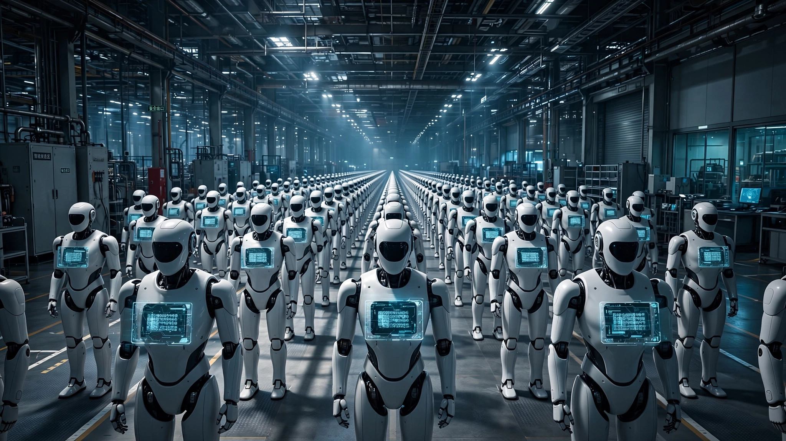

🤖 Robotics
One Company Plans to Deploy More Humanoid Robots This Year Than the Entire World Shipped in 2025
BYD's 20,000-unit target would exceed the 18,000 humanoid robots shipped globally last year. Meanwhile, China has launched a mandatory 29-digit national ID system that already tracks 28,000 registered robots across 200 models.

Twenty thousand. That is how many humanoid robots BYD plans to deploy inside its own factories this year, according to disclosures from Executive Vice President Li Ke and reporting by TechNode and 36Kr. The entire world shipped approximately 18,000 humanoid robots in 2025, per IDC's Worldwide Humanoid Robotics Market Analysis. Read that again. One Chinese automaker's internal deployment plan for a single year exceeds the combined global output of every humanoid manufacturer on Earth last year by 11%, a margin that would widen dramatically if BYD hits its subsequent target of 50,000 units annually from a new Xi'an industrial park whose construction is already underway.
Not a concept rendering. Not a press release aspiration. BYD has been running a secret robotics program codenamed "Yao-Shun-Yu" for four years. Right now, approximately 150 sixth-generation prototypes operate inside BYD's Shenzhen Pingshan vehicle plant and Changsha factory, handling transport, quality inspection, screw-driving, and parts sorting on active production lines. A dedicated R&D team of roughly 4,000 engineers, more than 30% of whom hold doctoral degrees, works under BYD's 15th Business Unit on making these machines work reliably enough to justify deploying 20,000 of them by December.
BYD is building this inside a country that just created something no other nation has: a mandatory, government-issued identity card for every humanoid robot. Think about that sentence for a moment. Robot ID cards.
The Robot Gets a Passport
In late May, China's Ministry of Industry and Information Technology launched the Humanoid Full Lifecycle Management Service Platform, the world's first mandatory national registration system for humanoid robots. Every humanoid manufactured in China now receives a unique 29-character digital identification code, and the rule is blunt: no code, no market access.
The ID is modeled on China's 18-character national citizen identity card, with 11 extra characters to encode operational data. The structure breaks down into four segments:
| Segment | Digits | Purpose |
|---|---|---|
| National code | 2 | Cross-border shipment tracking |
| Manufacturer code | 4 | Responsible Chinese firm |
| Product model code | 6 | Robot type and configuration |
| Serial number | 17 | Individual unit within model line |
Compare that to the Vehicle Identification Number system used worldwide for cars: 17 characters under ISO 3779, covering roughly 1.4 billion vehicles on global roads. China's robot ID uses 29. The 17-digit serial field alone can encode up to 1017 unique units per model per manufacturer, a number so large it only makes sense if you are building a system designed to outlast you. This is not an ID for 28,000 robots. It is an ID for a billion of them.
The system is not a simple serial number. Liu Chuanhou, an executive at the Hubei Humanoid Robot Innovation Center, told Chinese media: "If the robot breaks down, we can check its operational logs and maintenance records through its unique ID to locate the malfunction, determine liability, and carry out efficient maintenance." Real-time telemetry feeds joint wear data, battery health metrics, and AI cognitive capacity scores back to the central platform continuously. Manufacturers face mandatory recall requirements for common defects. Refurbishment and resale of scrapped robots? Strictly prohibited.
More than 100 Chinese manufacturers have enrolled. At launch: 28,000 robots, 200 models. Already more than what IDC counted as total global shipments for all of 2025.
BYD's Math
BYD employs 869,600 people. It produced 4.6 million vehicles last year on ¥804 billion ($112.8 billion) in revenue. Largest electric vehicle manufacturer on the planet. And now it is building a humanoid robot division with a scaling playbook borrowed directly from its automotive supply chain: batteries, actuators, motors, sensors, chips, precision assembly. Everything a humanoid needs, BYD already manufactures at volumes that would make a pure robotics startup weep.
The robot-to-worker ratio tells the scaling story:
| Timeframe | Humanoid Units | Employees | Robot : Worker Ratio |
|---|---|---|---|
| Today (prototypes) | ~150 | 869,600 | 1 : 5,797 |
| End of 2026 (target) | 20,000 | ~870,000 | 1 : 43 |
| Year 3 at Xi'an capacity | ~170,000 cumulative | ~870,000 | 1 : 5 |
For comparison, Amazon operates roughly 750,000 robots across its approximately 1.5 million employees, a ratio of about 1:2. BYD is on a trajectory to match Amazon's robot density within five years, starting from nearly zero. The difference is categorical: Amazon's robots are mostly wheeled fulfillment machines running fixed routes in structured environments, while BYD is targeting bipedal humanoids performing unstructured factory tasks that currently demand human hands, human judgment, and human mobility in environments that change by the hour.
Li Ke's ambitions stretch beyond the factory floor. Way beyond. "For each of my stores, if it's hard to hire sales staff in Europe, I say we don't need to anymore," she said. "Just buy four robots to serve as robot sales assistants." The company's automotive dealer infrastructure, a global network that most robotics startups spend years and tens of millions trying to build from scratch, already exists and already has customers walking through the doors. Home deployment is on the roadmap too: cooking, cleaning, companionship.
The R&D Asymmetry Nobody Is Talking About
BYD's robotics team of approximately 4,000 people, with more than 30% holding PhDs, represents a research force that dwarfs most Western humanoid robot companies in their entirety. Consider the numbers. Agility Robotics, the only Western firm with a paid commercial humanoid deployment (at a GXO warehouse since mid-2024), has roughly 500 total employees. Figure AI has about 1,000. Combine the headcount of every prominent US and European humanoid startup and BYD's single division likely outnumbers them all.
What does that team cost? Conservative estimate: at blended loaded compensation of roughly $100,000 per engineer in Shenzhen, accounting for the PhD-heavy composition against China's lower cost base, BYD is spending approximately $400 million per year on humanoid robotics R&D alone. Just R&D. That does not include shared manufacturing infrastructure, the supply chain that already produces 4.6 million vehicles worth of motors and batteries and sensors, or the robots BYD buys from partners like UBTECH, whose Walker S1 units already collaborate with autonomous logistics vehicles inside BYD's welding workshops.
Zoom out further. Global humanoid-specific venture funding reached $4 to 6 billion in 2025. Global humanoid revenue was approximately $440 million. A funding-to-revenue ratio of roughly 10:1. Reminiscent of the autonomous vehicle sector circa 2018, when Waymo, Cruise, and Argo AI were lighting billions on fire with commercial viability shimmering on a horizon that kept receding. The critical difference with humanoids in China: the government is subsidizing deployment infrastructure, not just research. The ID system. The standards body. The lifecycle platform. The mandatory recalls. Industrial policy designed to pull robots from labs into factories at a pace that pure venture capital simply cannot match.
What the Rest of the World Is Doing Instead
While China builds registry infrastructure, the United States is building safety frameworks. On June 22, NVIDIA announced Halos for Robotics, the first full-stack safety system for physical AI, drawing on 18,600 engineering-years of autonomous vehicle safety development. Agility is the first customer, integrating Halos into its Digit robots working at Amazon, GXO, Schaeffler, and Toyota Motor Manufacturing Canada. Impressive engineering. Zero robots registered in a national database.
Tesla plans low-volume Optimus production this summer, high-volume in 2027. Musk has discussed building a one-million-unit production line in Fremont, then a ten-million-unit line at Gigafactory Texas. Bold. 1X Technologies announced plans for 10,000 units in the first year of its new US factory. Also bold. But these are commitments to future capacity. Not present deployment. Plans, not robots.
The contrast is structural, not accidental. China's approach is top-down and infrastructure-first: build the regulatory framework, register every unit, mandate lifecycle tracking, then let 100+ manufacturers fill the system with robots. The US approach is bottom-up and product-first: build the best robot, prove it works in a carefully controlled pilot, develop safety standards around it, then scale. Both approaches have real merit. But China's has a 28,000-unit head start on the governance question that every country will eventually face: when millions of autonomous machines enter your workforce, who tracks them?
What This Analysis Did Not Prove
The 20,000-unit deployment target comes from BYD executive disclosures to Chinese media, not from audited production figures. Whether BYD actually delivers 20,000 operational humanoids into its factories by December remains unverified. Chinese corporate targets announced through executive interviews have a mixed track record with actual timelines.
The $400 million R&D estimate is derived from team size and regional compensation data, not from BYD's financial disclosures, which do not break out robotics spending as a separate line item. The actual figure could be significantly higher or lower depending on how BYD accounts for shared infrastructure and cross-division resource allocation.
IDC's 18,000-unit figure and the registration platform's 28,000-unit count use different methodologies. IDC counts shipments in a calendar year; the registration platform is cumulative and includes units manufactured before 2025. Direct comparison overstates the gap, though China's dominance of the installed base is not in dispute.
No humanoid manufacturer, including those in China, publishes mean-time-between-failure data for production environments. Without MTBF numbers, the economic case for humanoid deployment at scale remains theoretical. A robot that costs $50,000 and breaks every 200 hours has radically different economics than one that runs 2,000 hours between failures.
The Strongest Case Against
The best argument that China's lead is illusory: quantity is not quality. AGIBOT and Unitree may ship 5,000 units each, but most land in education, entertainment, and reception roles, not in unstructured factory tasks. A robot that greets visitors in a lobby and one that performs precision screw-driving in a welding shop are categorically different machines, and counting them together flatters the headline numbers.
China's humanoid sector also exhibits signs of a classic subsidy-driven overinvestment cycle. More than 200 models across 100+ manufacturers, in an industry with $440 million in global revenue, implies most companies are pre-revenue or deeply unprofitable. When Chinese local governments stopped subsidizing electric vehicle companies, dozens of EV startups collapsed between 2019 and 2022. The same shakeout may be coming for humanoid robots, and the national ID system, for all its ambition, cannot prevent it.
Finally, the US advantage in AI foundation models remains real. Li Ke herself acknowledged it: "China's robots lack a brain, while US robots have strong brains but weak limbs." The humanoid body is an engineering problem amenable to manufacturing scale. The humanoid brain, the AI that perceives, plans, and adapts in real time, is a research problem that billions in hardware manufacturing cannot shortcut.
The Bottom Line
China shipped over 80% of the world's humanoid robots last year and now has a national system to track every single one from factory to scrapyard. BYD, a company with 870,000 workers and the manufacturing infrastructure to produce 4.6 million vehicles a year, is applying automotive-scale production logic to humanoid robots, targeting more units this year than the entire planet produced last year.
If you work in manufacturing, logistics, or warehouse operations: the timeline for humanoid robots entering your industry just compressed. BYD's target of 1 robot per 43 workers by year-end is the leading edge of what will become standard across large-scale manufacturing in China within three to five years. If you invest in robotics: watch the MTBF numbers when they eventually surface, because they will determine whether deployment economics actually work. If you are a policymaker: China has answered the governance question before most countries have asked it. A 29-digit ID for every humanoid, mandatory registration, lifecycle tracking, recall authority. The framework exists. Thirty other countries will need their own version within the decade.